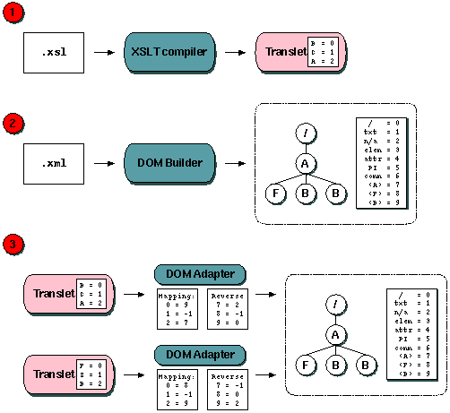

|
| | |
This document describes the design and overall architecture of XSLTC's
runtime environment. This does not include the internal DOM and the DOM
iterators, which are all covered in separate documents.
|
| | |
This figure shows the main components of XSLTC's runtime environment:

Figure 1: Runtime environment overview
The various steps these components have to go through to transform a
document are:
- instanciate a parser and hand it the input document
- build an internal DOM from the parser's SAX events
- instanciate the translet object
- pass control to the translet object
- receive output events from the translet
- format the output document
This process can be initiated either through XSLTC's native API or
through the implementation of the JAXP/TrAX API.
|
| | |
A translet is always a subclass of AbstractTranslet. As well
as having access to the public/protected methods in this class, the
translet is compiled with these methods:  | | | |
public void transform(DOM, NodeIterator, TransletOutputHandler); | | | | |
This method is passed a DOMImpl object. Depending on whether
the stylesheet had any calls to the document() function this
method will either generate a DOMAdapter object (when only one
XML document is used as input) or a MultiDOM object (when there
are more than one XML input documents). This DOM object is passed on to
the topLevel() method.
When the topLevel() method returns, we initiate the output
document by calling startDocument() on the supplied output
handler object. We then call applyTemplates() to get the actual
output contents, before we close the output document by calling
endDocument() on the output handler. | | | |
public void topLevel(DOM, NodeIterator, TransletOutputHandler); | | | | |
This method handles all of these top-level elements:
<xsl:output><xsl:decimal-format><xsl:key><xsl:param> (for global parameters)<xsl:variable> (for global variables) | | | |
public void applyTemplates(DOM, NodeIterator, TransletOutputHandler); | | | | |
This is the method that produces the actual output. Its central element
is a big switch() statement that is used to trigger the code
that represent the available templates for the various node in the input
document. See the chapter on the
main program loop for details on this method.
The translet's constructor initializes a table of all the elements we
want to search for in the XML input document. This table is called the
namesArray, and maps each element name to an unique integer
value, know as the elements "translet-type".
The DOMAdapter, which acts as a mediator between the DOM and the translet,
will map these element identifier to the element identifiers used internally
in the DOM. See the section on extern/internal type
mapping and the internal DOM design document for details on this.
The constructor also initializes any DecimalFormatSymbol
objects that are used to format numbers before passing them to the
output post-processor. The output processor uses thes symbols to format
decimal numbers in the output. | | | |
public boolean stripSpace(int nodeType); | | | | |
This method is only present if any <xsl:strip-space>
or <xsl:preserve-space> elements are present in the
stylesheet. If that is the case, the translet implements the
StripWhitespaceFilter interface by containing this method.
|
| | | | External/internal type mapping | | | | |
| | |
This is the very core of XSL transformations:
Read carefully!!!
Every node in the input XML document(s) is assigned a type by the DOM
builder class. This type is a unique integer value which represents the
element, so that for instance all <bob> elements in the
input document will be given type 7 and can be referred to by
that integer. These types can be used for lookups in the
namesArray table to get the actual
element name (in this case "bob"). The type identifiers used in the DOM are
referred to as external types or DOM types, as they are
types known only outside of the translet.
Similarly the translet assignes types to all element and attribute names
that are referenced in the stylesheet. This type assignment is done at
compile-time, while the DOM builder assigns the external types at runtime.
The element type identifiers used by the translet are referred to as
internal types or translet types.
It is not very probable that there will be a one-to-one mapping between
internal and external types. There will most often be elements in the DOM
(ie. the input document) that are not mentioned in the stylesheet, and
there could be elements in the stylesheet that do not match any elements
in the DOM. Here is an example:
| | | |
<?xml version="1.0"?>
<xsl:stylesheet version="1.0" xmlns:xsl="blahblahblah">
<xsl:template match="/">
<xsl:for-each select="//B">
<xsl:apply-templates select="." />
</xsl:for-each>
<xsl:for-each select="C">
<xsl:apply-templates select="." />
</xsl:for-each>
<xsl:for-each select="A/B">
<xsl:apply-templates select="." />
</xsl:for-each>
</xsl:template>
</xsl:stylesheet>
| | | | |
In this stylesheet we are looking for elements <B>,
<C> and <A>. For this example we can
assume that these element types will be assigned the values 0, 1 and 2.
Now, lets say we are transforming this XML document:
| | | |
<?xml version="1.0"?>
<A>
The crocodile cried:
<F>foo</F>
<B>bar</B>
<B>baz</B>
</A>
| | | | |
This XML document has the elements <A>,
<B> and <F>, which we assume are
assigned the types 7, 8 and 9 respectively (the numbers below that are
assigned for specific element types, such as the root node, text nodes,etc).
This causes a mismatch between the type used for <B> in
the translet and the type used for <B> in the DOM. The
DOMAdapter class (which mediates between the DOM and the translet) has been
given two tables for convertint between the two types; mapping
for mapping from internal to external types, and reverseMapping
for the other way around.
The translet contains a String[] array called
namesArray. This array contains all the element and attribute
names that were referenced in the stylesheet. In our example, this array
would contain these string (in this specific order): "B",
"C" and "A". This array is passed as one of the
parameters to the DOM adapter constructor (the other parameter is the DOM
itself). The DOM adapter passes this table on to the DOM. The DOM generates
a hashtable that maps its known element names to the types the translet
knows. The DOM does this by going through the namesArray from
the translet sequentially, looks up each name in the hashtable, and is then
able to map the internal type to an external type. The result is then passed
back to the DOM adapter.
External types that are not interesting for the translet (such as the
type for <F> elements in the example above) are mapped
to a generic "ELEMENT" type (integer value 3), and are more or
less ignored by the translet. Uninterresting attributes are similarly
mapped to internal type "ATTRIBUTE" (integer value 4).
It is important that we separate the DOM from the translet. In several
cases we want the DOM as a structure completely independent from the
translet - even though the DOM is a structure internal to XSLTC. One such
case is when transformations are offered by a servlet as a web service.
Any DOM that is built should potentially be stored in a cache and made
available for simultaneous access by several translet/servlet couples.

Figure 2: Two translets accessing a single dom using different type mappings
|
| | |
The main body of the translet is the applyTemplates()
method. This method goes through these steps:
-
Get the next node from the node iterator
-
Get the internal type of this node. The DOMAdapter object holds the
internal/external type mapping table, and it will supply the translet
with the internal type of the current node.
-
Execute a switch statement on the internal node type. There will be
one "case" label for each recognised node type - this includes the
first 7 internal node types.
The root node will have internal type 0 and will cause any initial
literal elements to be output. Text nodes will have internal node type 1
and will simply be dumped to the output handler. Unrecognized elements
will have internal node type 3 and will be given the default treatment
(a new iterator is created for the node's children, and this iterator
is passed with a recursive call to applyTemplates()).
Unrecognised attribute nodes (type 4) will be handled like text nodes.
This makes up the default (built in) templates of any stylesheet. Then,
we add one "case"for each node type that is matched by any
pattern in the stylesheet. The switch() statement in
applyTemplates will thereby look something like this:
| | | |
public void applyTemplates(DOM dom, NodeIterator,
TransletOutputHandler handler) {
// get nodes from iterator
while ((node = iterator.next()) != END) {
// get internal node type
switch(DOM.getType(node)) {
case 0: // root
outputPreable(handler);
break;
case 1: // text
DOM.characters(node,handler);
break;
case 3: // unrecognised element
NodeIterator newIterator = DOM.getChildren(node);
applyTemplates(DOM,newIterator,handler);
break;
case 4: // unrecognised attribute
DOM.characters(node,handler);
break;
case 7: // elements of type <B>
someCompiledCode();
break;
case 8: // elements of type <C>
otherCompiledCode();
break;
default:
break;
}
}
}
| | | | |
Each recognised element will have its own piece of compiled code.
Note that each "case" will not lead directly to a single template.
There may be several templates that match node type 7
(say <B>). In the sample stylesheet in the previous
chapter we have to templates that would match a node <B>.
We have one match="//B" (match just any <B>
element) and one match="A/B" (match a <B>
element that is a child of a <A> element). In this case
we would have to compile code that first gets the type of the current node's
parent, and then compared this type with the type for
<A>. If there was no match we will have executed the
first <xsl:for-each> element, but if there was a match
we will have executed the last one. Consequentally, the compiler will
generate the following code (well, it will look like this anyway):
| | | |
switch(DOM.getType(node)) {
:
:
case 7: // elements of type <B>
int parent = DOM.getParent(node);
if (DOM.getType(parent) == 9) // type 9 = elements <A>
someCompiledCode();
else
evenOtherCompiledCode();
break;
:
:
}
| | | | |
We could do the same for namespaces, that is, assign a numeric value
to every namespace that is references in the stylesheet, and use an
"if" statement for each namespace that needs to be checked for
each type. Lets say we had a stylesheet like this:
| | | |
<?xml version="1.0"?>
<xsl:stylesheet version="1.0" xmlns:xsl="blahblahblah">
<xsl:template match="/"
xmlns:foo="http://foo.com/spec"
xmlns:bar="http://bar.net/ref">
<xsl:for-each select="foo:A">
<xsl:apply-templates select="." />
</xsl:for-each>
<xsl:for-each select="bar:A">
<xsl:apply-templates select="." />
</xsl:for-each>
</xsl:template>
</xsl:stylesheet>
| | | | |
And a stylesheet like this:
| | | |
<?xml version="1.0"?>
<DOC xmlns:foo="http://foo.com/spec"
xmlns:bar="http://bar.net/ref">
<foo:A>In foo namespace</foo:A>
<bar:A>In bar namespace</bar:A>
</DOC>
| | | | |
We could still keep the same type for all <A> elements
regardless of what namespace they are in, and use the same "if"
structure within the switch() statement above. The other option
is to assign different types to <foo:A> and
<bar:A> elements. The latter is the option we chose, and
it is described in detail in the namespace design document.
|
|
|